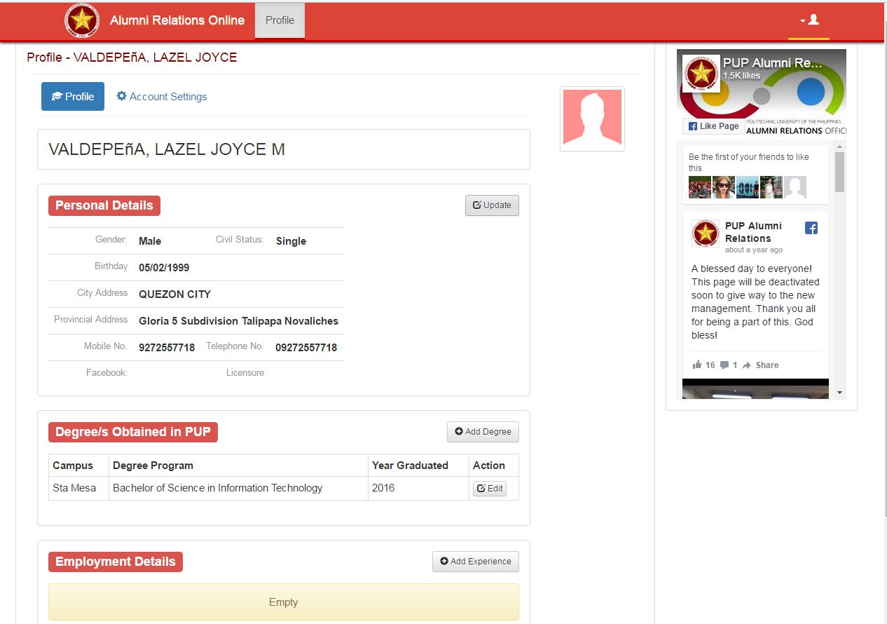

PUP
Search
Academics dropdown menu
Students dropdown menu

Branches dropdown menu
About dropdown menu
Media dropdown menu
Links dropdown menu
Alumni dropdown menu
Research dropdown menu
Events dropdown menu
Alumni profile

Alumni Settings